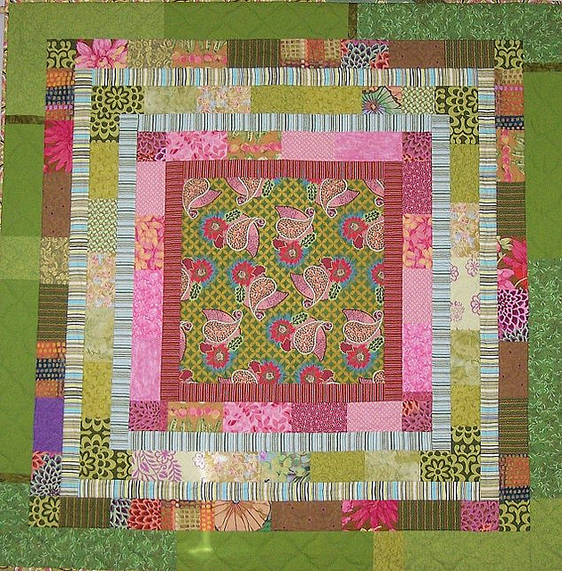
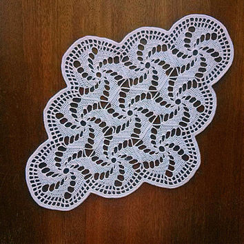
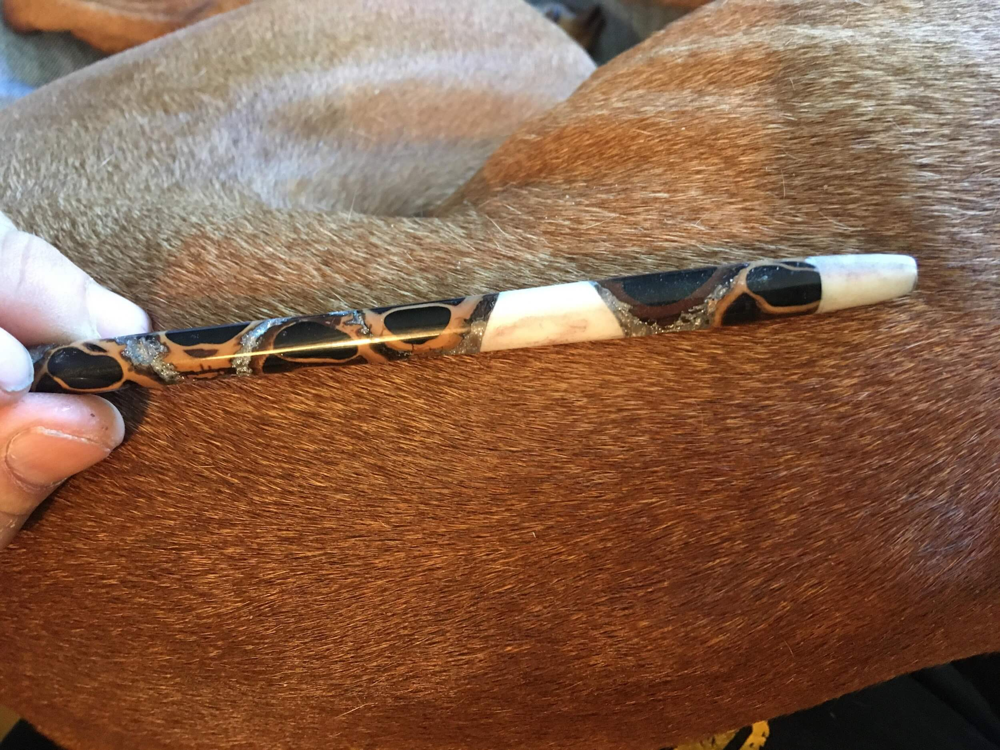
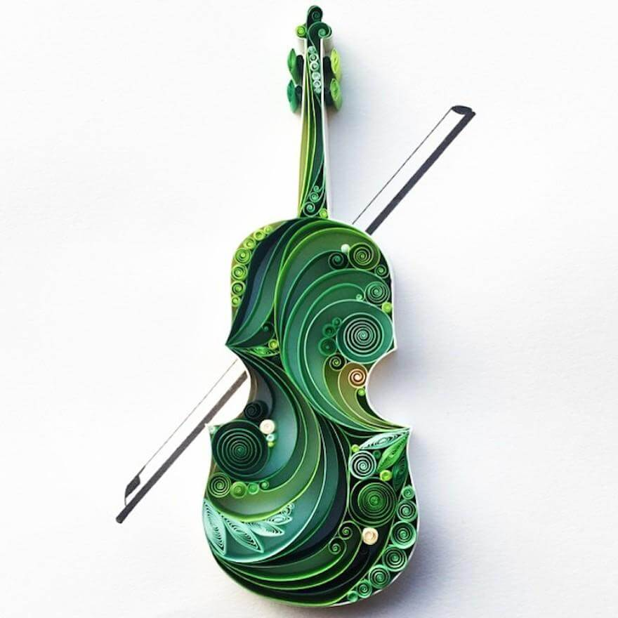
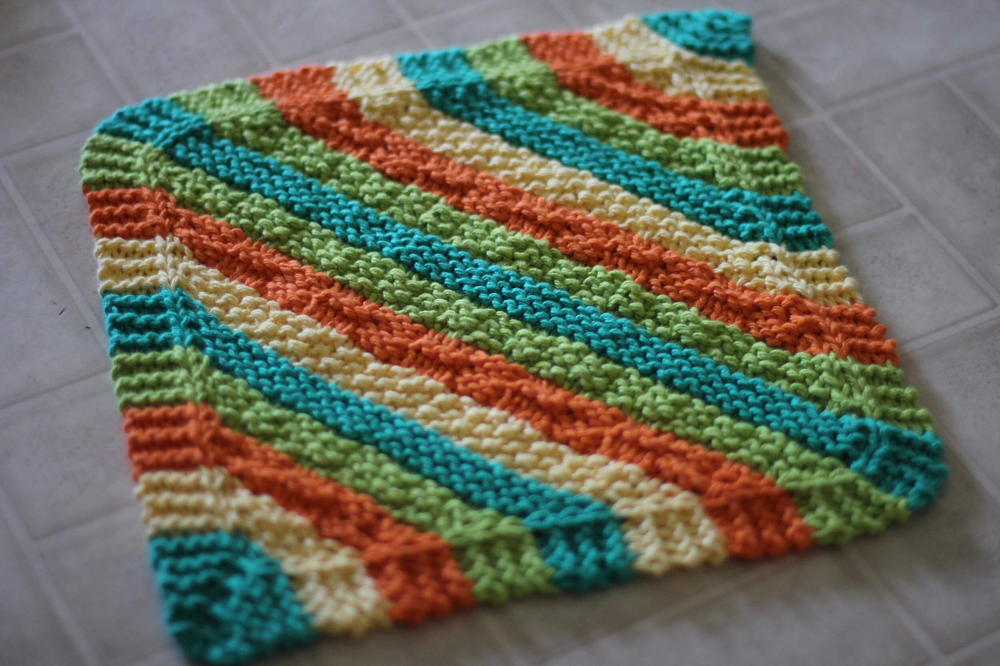
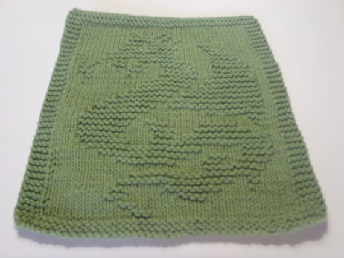
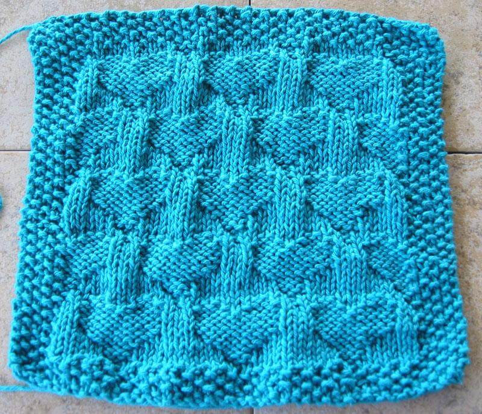

Programming, problem solving, and algorithms
CPSC 203, 2025 W2
January 8, 2026
Handcraft






Knitting: examples






Quantifying the Task
- If we describe one dimension of a square rag by \(n\), how much work is done by the knitter? ____________
- If we have enough yarn for 36,000,000 stitches, what is the largest rag we could make? ____________
- If each stitch takes a second, what is the largest rag we could make in one evening? ____________
- If it takes an evening to make a \(40 \times 40\) rag, how long will it take to make an \(80 \times 80\) rag? ____________
- If it takes time \(t\) to make an \(n\) by \(n\) rag, how long will it take to make a \(3n \times 3n\) rag? ____________
General idea: quantify the size of the problem (\(n\)) and consider the cost of our task as that size increases.
05:00